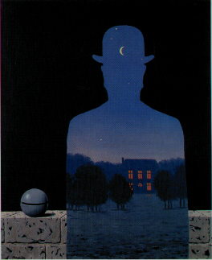
Renè Magritte era belga. Questa considerazione, che potrebbe sembrare un semplice dato anagrafico, è in realtà particolarmente importante per comprendere perché il surrealismo di Magritte sia tanto diverso da quello del circolo di Breton sia nei temi che nello stile. Forse il modo migliore per capire cosa potesse rappresentare Parigi, per un artista dell'epoca, è citare una celebre frase di Mirò, che così si rivolgeva ad un amico:
"PARIGI,PARIGI,PARIGI", dice, "preferisco essere assolutamente un fallito, mortalmente fallito a Parigi, piuttosto che galleggiare sulle acque putride di Barcellona".
Parigi è veramente il centro culturale più importante d'Europa, a Parigi vivono, o vi hanno soggiornato, gli ingegni più vivi del mondo, siano essi europei od americani, 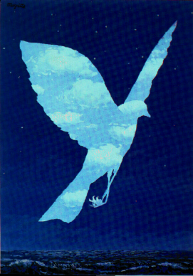
da pittori a scultori, poeti, letterati e filosofi.
Dopo aver studiato all'accademia di Bruxelles ed aver svolto un'attivaità influenzata dalle ricerche d'avanguardia (cubismo e futurismo),Magritte conobbe nel 1923 la pittura di De Chirico. Si avvicinò gradatamente alle idee surrealiste finchè, nel 1926, entrò in contatto con Breton e con il gruppo parigino. Visse a Parigi dal 1927 al 1930 con la moglie Georgette per poi tornare definitivamente in patria.
La pittura di Magritte prende le mosse dalla spazialità metafisica di De Chirico e dalla sua associazione imprevedibile di elementi, senza rapporto logico tra loro, per produrre un'atmosfera di straniamento e mistero.
Fortemente influenzato anche da Max Ernst, Magritte immette nella propria
opera una quantità di immagini d'uso e di oggetti familiari che, colte
con un'ottica realista e dipinte con la didattica semplicità delle
illustrazioni per i libri d'infanzia, vengono poi accostate tra loro o
trasformate in modo da stravolgere l'idea che abbiamo di esse e le relazioni che normalmente le stesse ci suggeriscono.
Magritte vuole in tal modo fare della pittura uno strumento di conoscenza del mondo, "ma una conoscenza che sia inseparabile dal suo mistero". Cade allora la barriera tra interno ed esterno, svanisce quella tra contenuto e contenitore; si alterano i rapporti di scala, si stravolgono le prospettive spaziali; muta il rapporto tra l'oggetto ed il nome che lo designa e si suggeriscono più complessi rapporti tra linguaggio e mondo degli oggetti.
La figurazione magrittiana ha avuto una straordinaria fortuna a partire dagli anni Sessanta, esercitando la propria influenza sia su una certa linea della cultura artistica (pop art), sia sulla produzione di immagini legata ai mezzi di comunicazione di massa ed alla pubblicità.
La produzione, peraltro molto copiosa, attinge ad un limitato repertorio di elementi archetipici o simbolici: un uomo vestito di nero, una donna nuda, terra, mare e cielo, l'alfiere degli scacchi ed una nutrita serie di oggetti di uso quotidiano.
E' proprio questo che differenzia Magritte dagli altri surrealisti: il suo surrealismo è un'arte più ragionata del surrealismo automatico del 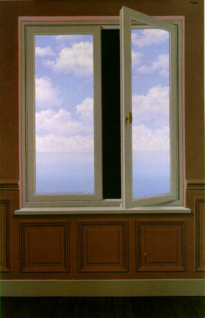
gruppo parigino. Il pittore belga cerca di perseguire il suo obiettivo decontestualizzando gli oggetti della sua rappresentazione per ottenere uno straniamento che sappia sorprenderci. A tal proposito è illuminante questo passaggio tratto da una sua conferenza:
"La creazione di nuovi oggetti, la trasformazione di oggetti noti, il mutamento di materia per certi oggetti: un cielo di legno, per esempio; l'uso delle parole associate alle immagini; la rappresentazione di certe immagini del dormiveglia furono a grandi linee i mezzi da me usati per costringere gli oggetti a diventare infine eccezionali.
Paul Nougé, in Les images défendues, osserva anche che i titoli dei miei quadri sono comodi ai fini della conversazione ma non sono spiegazioni. I titoli sono scelti in modo tale da impedire di situare i miei quadri in una regione rassicurante che lo svolgimento automatico del pensiero potrebbe trovar loro allo scopo di sottovalutarne la portata.
I titoli devono essere una protezione supplementare, destinata a scoraggiare qualsiasi tentativo di ridurre la poesia ad un gioco senza conseguenze."
ALCUNE OPERE DI RENE' MAGRITTE
( per vedere un'immagine ingrandita cliccare su di essa)
| 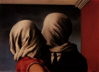 | 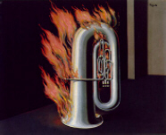 | 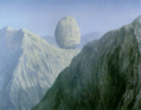 |
| 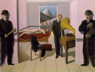 | 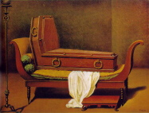 | 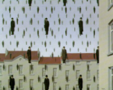 |
| 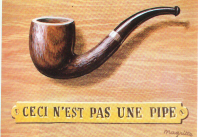 | 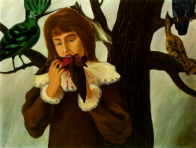 | 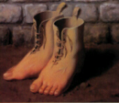 |
Inizio pagina Il surrealismo Menu principale